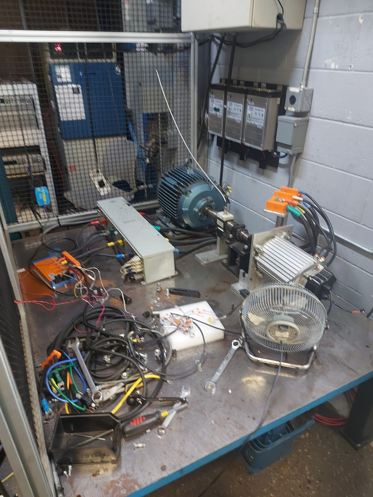
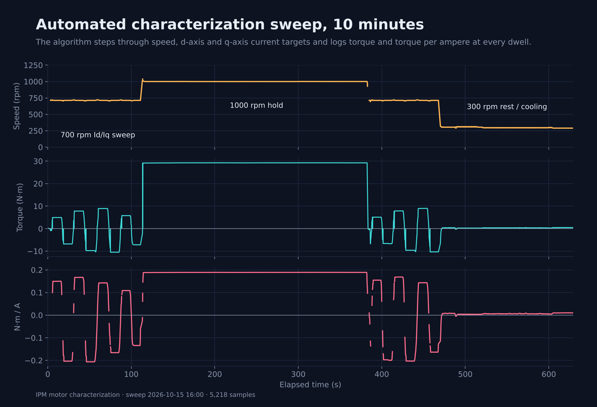
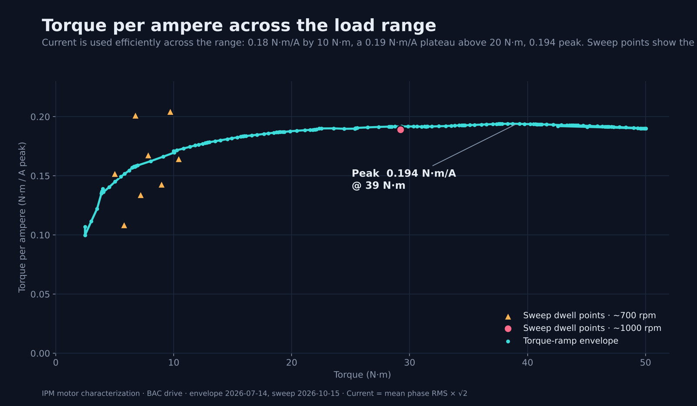
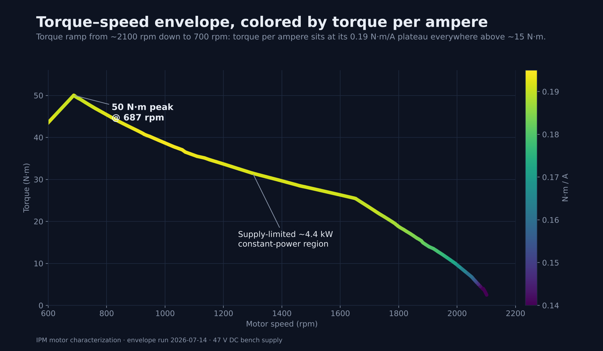
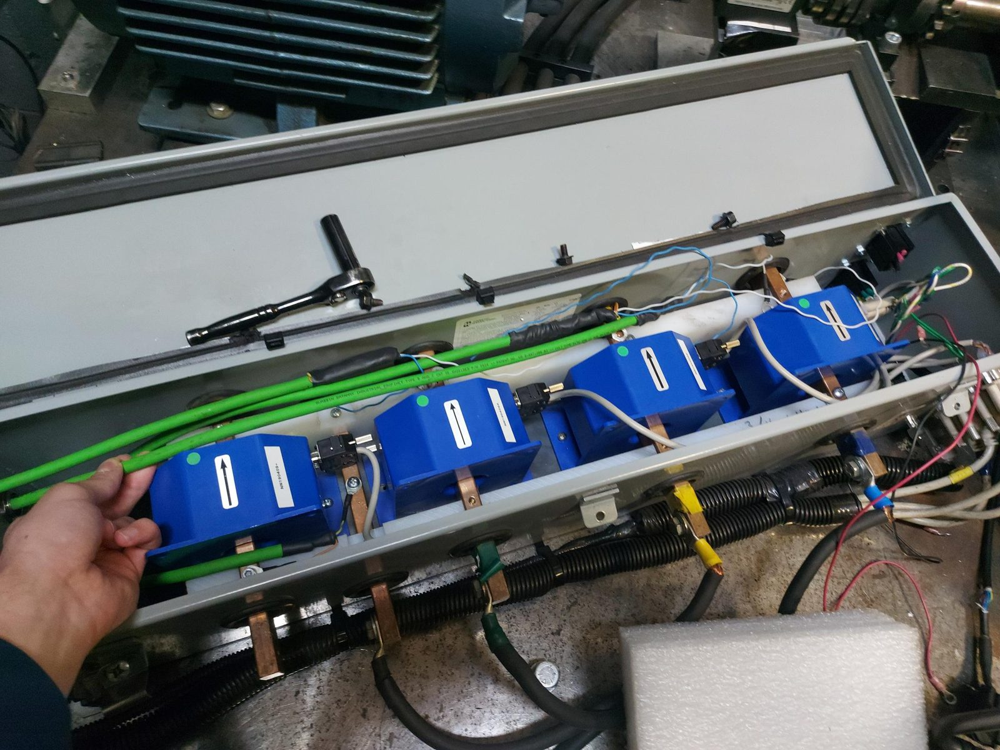
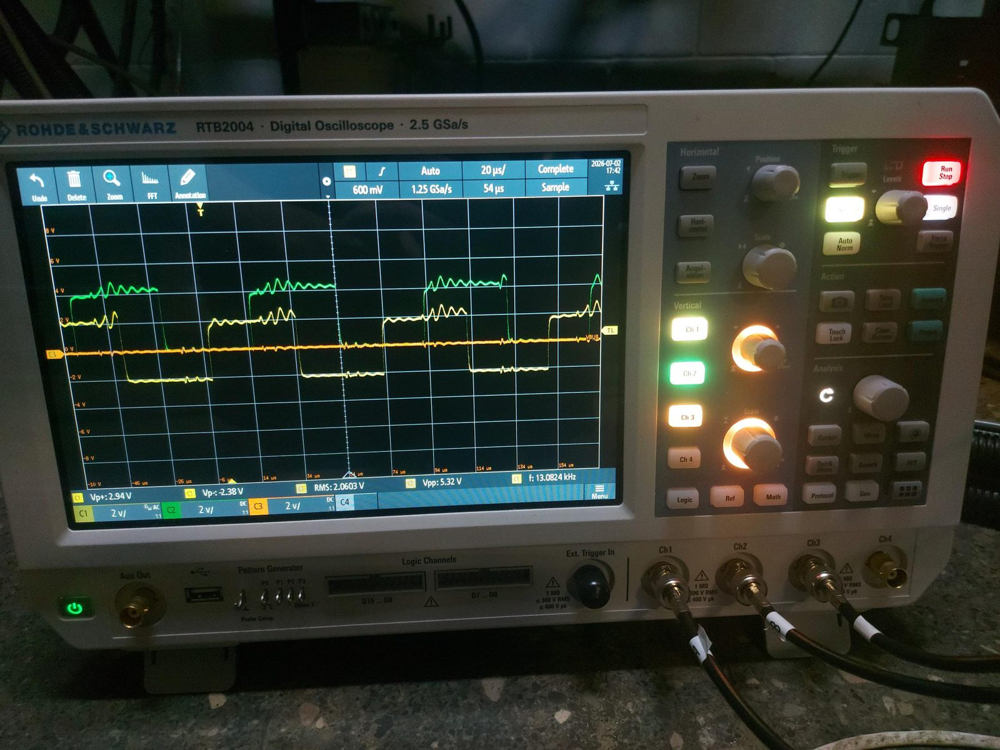
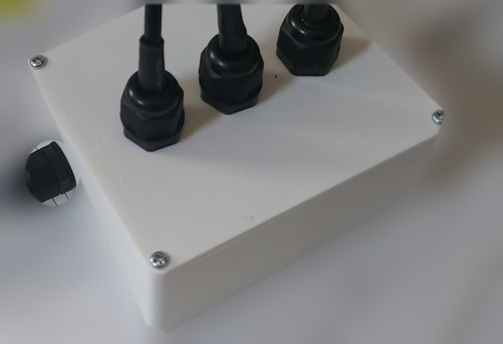
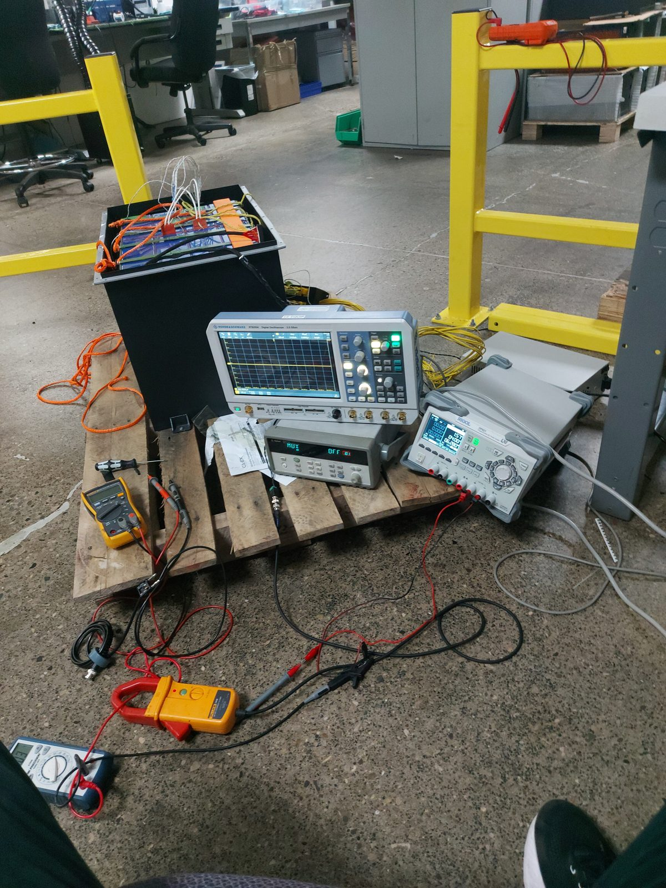
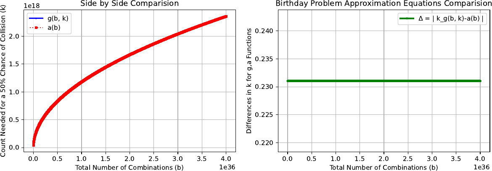

I build low-level software that has to be fast and has to be right.
Computer Engineering student at the University of Waterloo. I write C++ networking and cryptography, and Python automation that drives real motors on a dynamometer.
Open to 2027 software internships in New York and San Francisco.
See diffusion in Full-Time-Pad
This runs the v2.0 key transformation from my stream cipher, in your browser, on two 256-bit keys that differ by one bit.
Work: Accelerated Systems Inc.
Mechatronics Engineering Assistant. Co-op Apr–Aug 2026, part-time since Sep 2026. Electric-motor and EV-battery test engineering.
Automated IPM motor characterization
I wrote the software that characterizes an interior-permanent-magnet motor on the dynamometer, replacing hours-long manual procedures with an automated run that needs no operator at each point. It steps through speed, d-axis and q-axis current targets, ramps current instead of jumping so the motor never stalls, covers both motoring and regeneration, and logs torque and torque per ampere at every dwell. Runs of about 300 points generate 3D speed/torque/temperature lookup tables.
Underneath is a multithreaded Python/PySide6 framework that keeps the GUI, device management and algorithm execution separate, with watchdog monitoring, data logging and reusable test workflows, plus a calculus-based NumPy algorithm that finds the stator angle for maximum torque per ampere (MTPA). I also debugged and extended the 30,000+ line legacy Python codebase and integrated ABB ACS880 control to bring the 200 N·m dynamometer online.
I also removed a long-standing data-acquisition bottleneck. Dynamometer logging had been limited to 1 s intervals for years. Integrating the controller's P-Table and optimizing the .NET API made motor-controller data access 20× faster, and together with Yokogawa processing improvements it enabled 100 ms logging, a 10× higher logging frequency.
Impact: characterization went from hours of manual work to a repeatable, unattended run that produces the tables used to command accurate torque, and the optimized stator angle raised torque per ampere from 0.180 to 0.194 N·m/A, about 8%.








Rebuilt the dynamometer current-sensor wiring and tuned the power analyzer
The four current sensors on the dynamometer's power-measurement path had been wired in a way that invited noise. I rebuilt the assembly to proper practice, with grounding and shielded cabling, then wired the three-phase voltage measurements to the Yokogawa power analyzer and configured it for more precise readings.
Impact: more stable readings and more accurate numbers for every test that runs on that dyno.


Custom RC filter and enclosure to clean up speed signals
The oscilloscope showed ringing and noise on the signals used for speed readings. I built a custom RC filter and designed its enclosure in SolidWorks, 3D printed it, and added self-tapping screw features and cable glands for the three signal leads and the input cable.
Impact: a purpose-built, reusable part that damps the oscillation and reduces noise in the speed readings.




EV battery heater validation
I ran thermal tests on 280 Ah EV batteries to validate a battery heater, at room temperature and in a freezer to find edge cases. I placed thermocouples and thermistors on designated parts of the battery and recorded the heating behavior with a data logger, a DC power supply, a clamp meter and a multimeter.
Impact: measured heater performance from room temperature down to cold-soak conditions, including the edge cases a normal bench test would miss.


Other engineering experience
Wrote C smoke tests for the CAN interface of the WS22 motor controller, with message serialization built on structs and unions that handle endianness, field widths and byte order.
C, CAN, embeddedTaught students to wire and program servo and stepper motors on Arduino, and to debug wiring, current limits and signal timing with datasheets and multimeters.
Arduino, sensors, control basicsProjects
256-bit stream cipher built from ARX rounds and dynamic byte permutation, in three speed and complexity variants. Live demo at the top of this page.
~11× faster transformation (642 to 59 ms per 1M ops)Encrypted peer-to-peer messenger over asynchronous TCP/IPv6 with ECDH key exchange and AES/ChaCha authenticated encryption.
Unit, regression and benchmark suitesPeer-to-peer nodes with a mempool, concurrent mining, block propagation and proof-of-work consensus.
TCP nodes, wallet keysECIES encryption and ECDSA signatures following SEC 1, with ECDH, HMAC, AES and HKDF.
Published on PyPIFixed-width unsigned integers with compile-time bit sizes, 64-bit limbs and full constexpr support.
Any width, set at compile timeMultithreaded tool that recovers plaintext when a one-time-pad key is reused.
Concurrent, memory-safeResearch: collision odds at 2256 scale
How many random 256-bit values until two of them probably match? The textbook answer needs b!/(b−k)! with b = 2256, a number with roughly 1079 digits, so it can't be computed directly. I built a solver that finds the answer anyway, then used it to test the standard closed-form shortcut against the true value.
That is about 1.1774 × 2128. It agrees with an independent gamma-function solver, run at 600-digit precision, to over 200 decimal places.
- Method. I substituted Ramanujan's factorial approximation into the collision equation, which gives one function g(b, k) whose root is k. I solve it with the secant method in arbitrary-precision arithmetic (Python Decimal), starting from the classic closed-form estimate, and checked the result against a mpmath log-gamma solver.
- Finding. The widely used shortcut ½ + √(¼ + 2b ln 2) overshoots by ln 2 / 3 ≈ 0.231 at every b I tested (4,000 values up to 4×1036). The corrected form is k ≈ √(2b ln 2) + (3−2 ln 2)/6. At b = 2256 the measured gap matches ln 2 / 3 to 38 digits, and the remainder is the expected O(1/√b) term. This agrees with the published asymptotics (D. Brink, Ramanujan Journal, 2012).
- Why it matters. Collision bounds decide how large hash outputs, IDs and nonces need to be. At a trillion guesses per second, the 50% point for a 256-bit space is about 1019 years away, roughly a billion times the age of the universe.


Code and paper (Python, mpmath, multiprocessing, LaTeX)
Open-source contributions
Fixed memory leaks and logic errors and improved maintainability in NASA's spacecraft-link cryptography library.
CResolved build issues and improved code quality in the web-application security framework.
PythonDocumentation updates and improvements.
DocsSkills
- Languages
- C/C++ (17–23), Python, Java, C#, Verilog, Bash
- Systems
- Linux/Unix, memory management, concurrency, TCP/UDP/IP, GDB, Valgrind, test automation
- Hardware and controls
- Motor characterization, ABZ and sin/cos encoders, high-power wiring, Yokogawa power analyzers, industrial motor controllers
- Tools
- Git, GNU Make, Docker, Qt/PySide6, NumPy, Pandas, Matplotlib, Quartus Prime, LaTeX
Education
BASc Computer Engineering, Honours, Co-op
University of Waterloo
President's Scholarship of Distinction, Dean's Global Distinction Award, Engineering International Scholar Award.